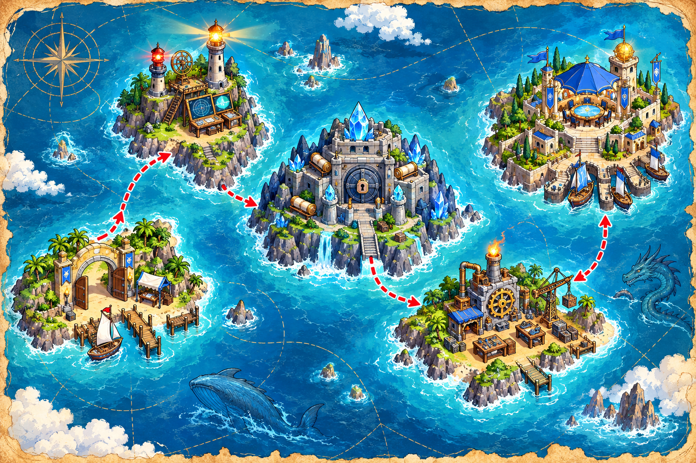

Crée ta fiche de recrue
Transforme des informations en variables. Il faut au moins deux compétences.
En attente du dossier…

Observe, formule une hypothèse, teste-la. Chaque mission débloque la suivante, sans afficher les corrections du cours.
Transforme des informations en variables. Il faut au moins deux compétences.
En attente du dossier…
Règle la charge à une valeur critique, puis choisis la structure qui réagit au seuil.
Clique les blocs dans l’ordre logique : produire, trier, sélectionner, exporter.
Quel fichier doit contenir les fonctions réutilisables du module CipherPolTools ?
Tu reçois un CSV de recrues. Quelle première exécution est la plus sûre avant toute création réelle dans Active Directory ?
Tu as relié données, conditions, pipeline, modules et sécurité. Le vrai TP t’attend pour écrire les scripts complets.
Ouvrir le fil rouge complet